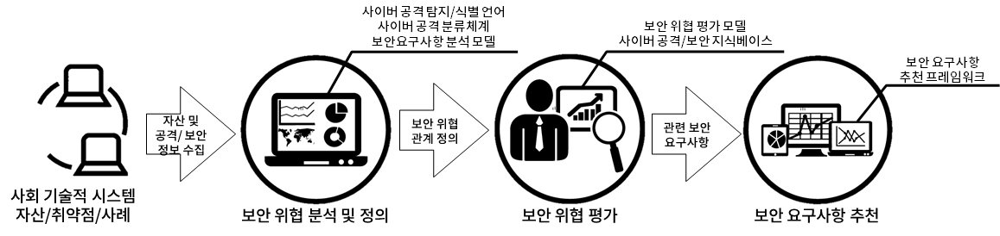

Security Requirements Recommendation Framework for Mission-Critical Systems in Socio-Technical Environments
Sponsors: 개인기초연구, 한국연구재단
Team Members:
Faculty: Dr. Seok-Won Lee

Process for Security Requirements Recommendation Framework

Security Requirements Recommendation Framework using 3-layer
Ontology Knowledge Base
Period: 2017.06. - 2020.05.
Description: This research aims to understand and recommend the security requirements based on the domain and system related knowledge. By considering the problem such as Cognitive, Information-Modeling and Physical Layers, we can easily derive the important security requirements, which are difficult to be derived from the human’s thought. The aim of this project is to develop a framework to provide the recommendation about adequate Security Requirements based on automatic evaluation of degree of security risk for Mission-Critical Systems in Socio-Technical Environments. By fully-understanding diverse knowledge-based system and modeling methodology, the research of analyzing an hierarchical approach between different models is necessary. Accordingly, requirements specification methodology and security requirements recommendation through risk evaluation based on security target is proposed. Currently, the research of an approach using machine learning to learn and utilize knowledge related to cyber threats and security requirements that are constantly evolving is in progress.